library(tidyverse)
library(posterior)
library(patchwork)
library(mvtnorm)5 The Metropolis Algorithm
Suppose you want to learn the average number of hours, \(\mu\), that first-year students sleep. You collect data by asking 20 first-year psychology students how many hours they slept last night. To infer plausible values for \(\mu\) from these data, you take a Bayesian approach. You choose a prior distribution and a sampling model, then combine them to obtain an unnormalized posterior. But how can you generate draws from this distribution?
Chapter 2 introduced conjugate updates and grid approximation to address this question, and Chapter 4 used Stan. In this chapter, we construct a sampler ourselves: The Metropolis algorithm. It proposes a new parameter value, compares its posterior density with that at the current value, and decides whether to move. Repeating this procedure produces a Markov chain that is designed to have the posterior as its stationary distribution.
In this chapter, we will make use of the following packages:
Goals
- Calculate Metropolis acceptance probabilities.
- Implement the Metropolis algorithm in R and check its output against a known posterior.
- Verify the detailed balance property of the Metropolis algorithm.
- Explain how step-size affects the efficiency of the Markov chain, and tune the algorithm using its acceptance rate, trace plots, and effective sample size.
- Sample from a posterior using the Metropolis algorithm.
- Diagnose implementation errors by examining the states recorded after acceptance and rejection.
- Extend the Metropolis algorithm to sample from multi-parameter distributions and explain why its efficiency decreases as the number of parameters grows.
5.1 The idea: propose, compare, accept or reject
We want a Markov chain whose stationary distribution has a chosen density \(f(\theta)\), such as a posterior density. The Metropolis algorithm (Metropolis et al., 1953) generates such a Markov chain using a proposal distribution to simulate candidate next states and evaluations of the target density to decide whether to accept them. The target density need only be known up to a constant, making the algorithm particularly useful for posterior inference because it can generate draws from the posterior without requiring conjugacy.
5.1.1 The Normal proposal density
In this chapter, proposed values are drawn from a Normal distribution centered on the current state: \[ \theta^\star\sim\text{N}\!\left(\theta^{(t)},c^2\right),\qquad c>0. \] The standard deviation \(c\) is called the step size of the proposal distribution. It controls how far proposed values \(\theta^\star\) tend to be from the current state \(\theta^{(t)}\).
Figure 5.1 shows the proposal density for two step sizes, both centered on the current state \(\theta^{(t)}=6\). The marked value is one standard deviation (i.e., step size) above the current state. With \(c=0.5\), almost every proposal falls between 5 and 7, so the chain typically proposes small steps. With \(c=2\), values as far away as 2 or 10 are also proposed.
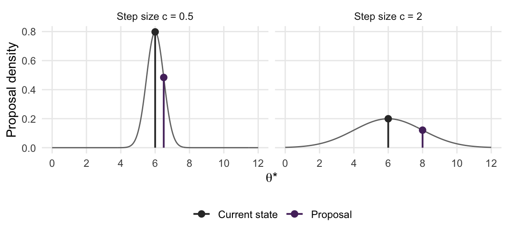
We write \(q(b\mid a)\) for the density of proposing \(b\) when the chain is at \(a\). In the Metropolis algorithm, the proposal must be symmetric between proposed and current states: \[ q(b\mid a)=q(a\mid b). \] The Normal proposal has this property, as we can verify directly: \[ q(\theta^\star \mid \theta^{(t)}) = \frac{1}{\sqrt{2\pi}\,c}\exp\left(-\frac{1}{2c^2}\left(\theta^\star - \theta^{(t)}\right)^2\right) = \frac{1}{\sqrt{2\pi}\,c}\exp\left(-\frac{1}{2c^2}\left( \theta^{(t)} - \theta^\star\right)^2\right) = q(\theta^{(t)} \mid \theta^\star). \] This equality holds because the squared difference between the proposed and current states is the same in both directions.
5.1.2 Comparing the target densities of proposed and current values
We want the Markov chain to explore the posterior distribution, spending more time in regions with greater posterior probability mass. One way to encourage this is to always accept a proposed value if its density is higher than that of the current state. But we must be careful. If we never accept proposals with lower density, the chain will move toward a mode rather than explore the full posterior distribution. The remedy is to also accept proposals with lower density with a certain probability.
We compare the densities at the proposed and current states through their ratio: \[ r=\frac{f(\theta^\star)}{f(\theta^{(t)})}. \] This ratio is non-negative. If \(r\geq1\), the target density is at least as high at the proposal, and we accept it. If \(r<1\), we accept the proposal with probability \(r\). To make this decision, we draw a value \(u\) from a uniform distribution between \(0\) and \(1\) and accept the proposal if \(u < r\). A proposal with half the current target density is therefore accepted with probability \(0.5\).
Figure 5.2 compares two proposals for a Normal target with mean \(0\) and variance \(1\). In the left panel, the proposal has a higher target density than the current state and is accepted. In the right panel, the proposal has a lower target density and is accepted with probability \[ r = \frac{\frac{1}{\sqrt{2\pi}}\exp\left(-\frac{1}{2}\left(1\right)^2\right)}{\frac{1}{\sqrt{2\pi}}\exp\left(-\frac{1}{2}\left(0\right)^2\right)} = \exp\left(-\frac{1}{2}\right)\approx 0.61. \] This illustrates the Metropolis algorithm. Notice that both the proposal and target distributions are Normal, but they serve different purposes. We generate candidate values from the proposal distribution and evaluate their acceptance probabilities using the target density.
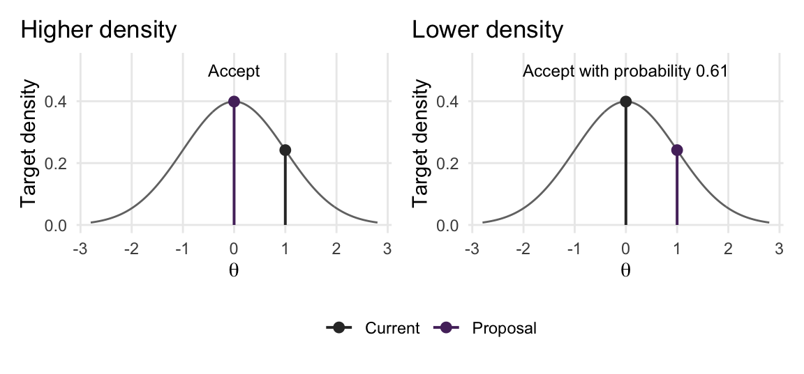
The Metropolis algorithm
Given a target density \(f\), a starting value \(\theta^{(0)}\), and a symmetric proposal distribution \(q\):
- Propose. Draw \(\theta^\star \sim q(\theta^\star \mid \theta^{(t)})\).
- Compare. Compute \(r = f(\theta^\star) / f(\theta^{(t)})\).
- Accept or reject. If \(r \geq 1\), set \(\theta^{(t+1)} = \theta^\star\). Otherwise draw \(u \sim \text{Unif}(0,1)\) and set \(\theta^{(t+1)} = \theta^\star\) if \(u < r\), and \(\theta^{(t+1)} = \theta^{(t)}\) if not.
Repeat for \(t = 0, 1, 2, \ldots\). After \(T\) iterations, the recorded states are \(\theta^{(1)},\ldots,\theta^{(T)}\).
The posterior normalizing constant cancels in the ratio \(r\). We verify this by substituting the expressions for the posterior densities in the ratio: \[ \frac{f(\theta^\star\mid y)}{f(\theta^{(t)}\mid y)} =\frac{\frac{f(y\mid\theta^\star)f(\theta^\star)}{f(y)}} {\frac{f(y\mid\theta^{(t)})f(\theta^{(t)})}{f(y)}} =\frac{f(y\mid\theta^\star)f(\theta^\star)} {f(y\mid\theta^{(t)})f(\theta^{(t)})}. \] Thus, we can use the Metropolis algorithm without calculating \(f(y)\).
5.1.3 Three iterations of the Metropolis algorithm
Let’s walk through the first three iterations of the Metropolis algorithm, starting at \(\theta^{(0)} = 0\). We use a standard Normal target distribution, with mean \(0\) and variance \(1\). The density of this distribution is \(f(\theta) = \frac{1}{\sqrt{2\pi}}\exp(-\theta^2/2)\). Because the normalizing constant cancels, we work with the unnormalized target density \(f(\theta) \propto \exp(-\theta^2/2)\). Suppose the proposed values \(\theta^\star\) and Uniform draws \(u\) are those in Table 5.1. Each proposal is drawn from the proposal distribution conditional on the state of the Markov chain at the preceding iteration.
| Iteration \(t\) | Current state | Proposal \(\theta^\star\) | Ratio \(r\) | Uniform draw \(u\) | Decision | Recorded state \(\theta^{(t)}\) |
|---|---|---|---|---|---|---|
| 1 | 0 | 1 | \(e^{-1/2}\approx0.607\) | 0.80 | Reject | 0 |
| 2 | 0 | 1 | \(e^{-1/2}\approx0.607\) | 0.40 | Accept | 1 |
| 3 | 1 | 0.5 | \(e^{3/8}\approx1.455\) | 0.90 | Accept | 0.5 |
In the first iteration, the proposed value \(\theta^\star = 1\) is drawn from \(q(\theta^\star \mid \theta^{(0)} = 0)\). Since \(u = 0.80 > r = 0.607\), the proposal is rejected, and the chain remains at \(0\). In the second iteration, a new proposal is drawn from \(q(\theta^\star \mid \theta^{(1)} = 0)\). This time, \(u = 0.40 < r = 0.607\), so the proposal is accepted and the chain moves to \(1\). In the third iteration, the target density at the proposed value is higher than at the current state, so the proposal is accepted. The three recorded states of the Markov chain are \((0,1,0.5)\). The first recorded \(0\) must be retained because an iteration has passed, even though the chain did not move.
Quiz yourself!
The chain is at \(\theta^{(t)} = 1\) where \(f(1) = 0.24\), and the proposal is \(\theta^\star = 2.5\) where \(f(2.5) = 0.02\). Given this proposal, what is its acceptance probability? And if instead the proposal were \(\theta^\star = 0.3\) with \(f(0.3) = 0.38\)?
5.2 A first Metropolis sampler in R
5.2.1 The Normal posterior of average hours of sleep
Let’s return to our sleep survey. Suppose we collected the following responses, in hours:
sleep_hours <- c(6.5, 7.2, 5.8, 6.9, 7.5, 6.1, 5.5, 7.0, 6.4, 8.1,
6.7, 5.9, 7.3, 6.2, 6.8, 7.7, 5.6, 6.3, 7.1, 6.0)The students reported sleeping an average of \(6.63\) hours. We model these responses as independent Normal variables with an unknown mean \(\mu\) and a known standard deviation of one hour, i.e., \(Y_i \sim \text{N}(\mu\text{, }1^2)\). We assign a \(\text{N}(7\text{, }0.5^2)\) prior to \(\mu\), expressing an expected average of seven hours of sleep, with most prior probability between six and eight hours.
This is the Normal–Normal model from Chapter 2. As shown in Table 2.1, the posterior distribution of \(\mu\) is Normal with mean \[ \mu_n = \frac{\sum_i y_i+\frac{7}{0.5^2}}{\frac{n}{1} + \frac{1}{0.5^2}} = \frac{132.6 + 28}{20+4} \approx 6.692, \] and variance \[ \tau_n^2=\frac{1}{\frac{n}{1}+\frac{1}{0.5^2}} = \frac{1}{20+4}\approx 0.042. \] The posterior mean of \(6.692\) hours thus lies between the observed mean of \(6.63\) hours and the prior mean of seven hours.
In R:
n <- length(sleep_hours)
tau2_n <- 1 / (1 / 0.5^2 + n / 1^2)
mu_n <- tau2_n * (7 / 0.5^2 + sum(sleep_hours) / 1^2)
c(sample_mean = mean(sleep_hours), posterior_mean = mu_n,
posterior_sd = sqrt(tau2_n))
#> sample_mean posterior_mean posterior_sd
#> 6.6300000 6.6916667 0.2041241We are familiar with the Normal distribution and can compute its mean and variance, evaluate its density using dnorm, calculate tail probabilities such as \(P(\mu > 7)\) using pnorm, and generate independent draws directly from the posterior using rnorm(). This gives us a known posterior distribution against which to check the draws generated by the Metropolis algorithm before moving to a nonconjugate prior distribution.
5.2.2 Metropolis for a log target posterior
The Metropolis algorithm requires the unnormalized posterior density. So far, we have formulated the algorithm using posterior densities directly, but, as discussed in Chapter 2, we prefer to work on the log scale. Multiplying many small likelihood contributions can produce a number too small for R to represent, making the ratio \(r\) numerically unstable or even undefined (e.g., through division by zero).
Taking the log of the ratio \(r\) gives \[
\log r = \log f(y \mid \mu^\star) + \log f(\mu^\star) - \log f(y \mid \mu^{(t)}) - \log f(\mu^{(t)}),
\] which is the difference between the unnormalized log posterior densities at the proposed and current states. For the sleep survey, the unnormalized log posterior density of \(\mu\) is \[
\ell(\mu \mid y)=\sum_{i=1}^n\log f(y_i\mid\mu)+\log f(\mu).
\] We can compute this quantity in R using the density functions with log = TRUE:
log_posterior <- function(mu, y = sleep_hours) {
sum(dnorm(y, mean = mu, sd = 1, log = TRUE)) + # log likelihood
dnorm(mu, mean = 7, sd = 0.5, log = TRUE) # log prior
}In the Metropolis algorithm, we compare the ratio \(r\) with a draw \(u\) from a Uniform distribution between \(0\) and \(1\). We accept the proposed value when \(u < r\). Because the logarithm is strictly increasing, taking the log of both sides preserves the inequality: \(u < r\) if and only if \(\log u < \log r\). Moreover, because proposals are always accepted when \(r \geq 1\), they are also always accepted when \(\log r \geq \log 1 = 0\). We can therefore formulate the Metropolis algorithm entirely on the log scale.
Metropolis on the log scale
Given a target log density \(\ell\), a starting value \(\theta^{(0)}\), and a symmetric proposal distribution \(q\):
- Propose. Draw \(\theta^\star \sim q(\theta^\star \mid \theta^{(t)})\).
- Compare. Compute \(\log r = \ell(\theta^\star) - \ell(\theta^{(t)})\).
- Accept or reject. If \(\log r \geq 0\), set \(\theta^{(t+1)} = \theta^\star\). Otherwise draw \(u \sim \text{Unif}(0,1)\) and set \(\theta^{(t+1)} = \theta^\star\) if \(\log u < log r\), and \(\theta^{(t+1)} = \theta^{(t)}\) if not.
Repeat for \(t = 0, 1, 2, \ldots\). After \(T\) iterations, the recorded states are \(\theta^{(1)},\ldots,\theta^{(T)}\).
To verify that the log-scale calculation gives the same decisions, consider the three iterations in Table 5.1. In the first iteration, the proposal from \(0\) to \(1\) has \(\log r=-0.5\). The Uniform draw gives \(\log(0.80)\approx-0.223\), which is greater than \(\log r\), so the proposal is rejected and the chain remains at \(0\). In the second iteration, the same proposal has \(\log r=-0.5\), but now \(\log(0.40)\approx-0.916\) is smaller than \(\log r\), so the proposal is accepted and the chain moves to \(1\). In the third iteration, the proposal from \(1\) to \(0.5\) has \(\log r=0.375\). Because \(\log r\geq 0\), the proposal is always accepted, and the chain moves to \(0.5\). The recorded states are again \((0,1,0.5)\).
5.2.3 The Metropolis function in R
The following R function implements the Metropolis algorithm. It takes the log target density, a starting value, the number of iterations, and the step size as arguments. It returns a list containing the recorded states in a tibble and the fraction of accepted proposals. The n_iter argument specifies the number \(T\) of recorded states, while additional arguments in ..., such as the data, are passed to log_target. The function generates Normal proposals and Uniform draws for the acceptance decisions.
metropolis <- function(log_target, init, n_iter, step_size, ...) {
draws <- numeric(n_iter)
current <- init
current_lp <- log_target(current, ...)
n_accept <- 0
for (t in seq_len(n_iter)) {
proposal <- rnorm(1, mean = current, sd = step_size) # 1. propose
proposal_lp <- log_target(proposal, ...)
log_r <- proposal_lp - current_lp # 2. compare (on the log scale)
if (log(runif(1)) < log_r) { # 3. accept ...
current <- proposal
current_lp <- proposal_lp
n_accept <- n_accept + 1
}
draws[t] <- current # ... or stay and record
}
list(
draws = tibble(iteration = seq_len(n_iter), theta = draws),
accept_rate = n_accept / n_iter
)
}A few remarks on how the code implements the algorithm. Step 2 computes \(\log r\) rather than \(r\) by subtracting the log target densities. Step 3 compares \(\log u\) with \(\log r\), which is equivalent to comparing \(u\) with \(r\). This handles both acceptance cases at once: if \(r \geq 1\), then \(\log r \geq 0 > \log u\), so the proposal is always accepted. We also store the log target density at the current state, current_lp, so that each iteration evaluates the target only once, at the proposed value. This saves computation when evaluating the target is expensive.
Let’s run the algorithm for \(T = 10,000\) iterations, starting at \(\mu^{(0)} = 5\) with a step size of \(c = 0.5\):
set.seed(84735)
fit <- metropolis(log_posterior, init = 5, n_iter = 10000, step_size = 0.5)
fit$accept_rate
#> [1] 0.4375
head(fit$draws)
#> # A tibble: 6 × 2
#> iteration theta
#> <int> <dbl>
#> 1 1 5.33
#> 2 2 5.98
#> 3 3 6.10
#> 4 4 6.10
#> 5 5 6.12
#> 6 6 6.12About 44% of the proposals were accepted. The theta column stores the sampled values of \(\mu\), while iteration records the iteration number. A repeated value indicates that the proposed value was rejected.
Figure 5.3 shows a trace plot of the Markov chain and a histogram of the draws, after a burnin of \(500\), with the exact Normal posterior density overlaid on the histogram. The histogram closely matches the exact posterior density.
p_trace <- ggplot(fit$draws, aes(iteration, theta)) +
geom_line(color = "#552E6B", linewidth = 0.3) +
labs(x = "Iteration", y = expression(mu))
p_hist <- ggplot(filter(fit$draws, iteration > 500), aes(theta)) +
geom_histogram(aes(y = after_stat(density)), bins = 40,
fill = "#ECECEC", color = "white") +
stat_function(fun = dnorm, args = list(mean = mu_n, sd = sqrt(tau2_n)),
color = "#552E6B", linewidth = 1) +
labs(x = expression(mu), y = "Density")
p_trace | p_hist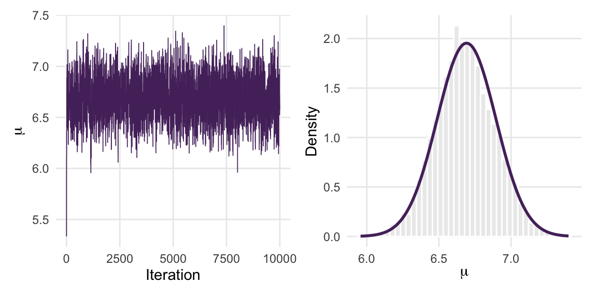
We can also use the draws to estimate the posterior mean, standard deviation, and central 95% credible interval, and compare them with their exact values.
draws <- fit$draws |> filter(iteration > 500)
draws |>
summarize(mean = mean(theta), sd = sd(theta),
lower = quantile(theta, 0.025), upper = quantile(theta, 0.975))
#> # A tibble: 1 × 4
#> mean sd lower upper
#> <dbl> <dbl> <dbl> <dbl>
#> 1 6.68 0.204 6.29 7.09
c(mean = mu_n, sd = sqrt(tau2_n),
lower = qnorm(0.025, mu_n, sqrt(tau2_n)), upper = qnorm(0.975, mu_n, sqrt(tau2_n)))
#> mean sd lower upper
#> 6.6916667 0.2041241 6.2915907 7.0917426As discussed in Chapter 4, the starting value can influence the early iterations of a Markov chain. Our chain starts at five hours, well below the region where most posterior probability lies, and needs time to reach that region. We therefore discard the first \(500\) iterations before computing the histogram and posterior summaries. This is more than enough for our example, but reaching the posterior region does not guarantee that the chain has explored it adequately. Moreover, the remaining draws are dependent, so we still need to assess their precision using the effective sample size (ESS) and Monte Carlo standard error (MCSE).
5.3 Why the Metropolis algorithm works
The Metropolis algorithm worked well for the Normal posterior in our sleep survey. But there we could compare the generated draws with the exact posterior distribution. How can we be confident that the algorithm also works when the posterior distribution is not known in advance? To answer this question, we first show that the Metropolis algorithm satisfies the detailed balance condition, which guarantees that the target distribution is stationary. We then argue that the Markov chain is irreducible and aperiodic, which together with stationarity ensures that it converges to the target distribution.
5.3.1 Detailed balance
Suppose that in iteration \(t + 1\), the chain is at \(\theta^{(t)}\) and we propose a new state \(\theta^\star\). The Metropolis acceptance probability can be written as \[ \min\left\{1\text{, }r\right\} = \min\left\{1\text{, }\frac{f(\theta^\star)}{f(\theta^{(t)})}\right\} = \begin{cases} 1 \text{, if }r \geq 1\\ r \text{, if }r < 1 \end{cases}. \] This is the usual formulation of the Metropolis acceptance rule. Although we use the numerically more stable \(\log r\) formulation in our R implementation, the expression above is more convenient for establishing detailed balance.
In a discrete Markov chain, the transition matrix gives a probability of moving from the current state \(\theta^{(t)}\) to the next state \(\theta^\star\). For a continuous state space, we instead use a transition density, as illustrated in Figure 5.4. We write \(K(\theta^{(t)}\text{, }\theta^\star)\) for the density of moving from \(\theta^{(t)}\) to \(\theta^\star\) in one update. The candidate must first be proposed and then accepted, giving \[ K(\theta^{(t)}\text{, }\theta^\star) = q(\theta^\star\mid \theta^{(t)})\min\!\left\{1,\frac{f(\theta^\star)}{f(\theta^{(t)})}\right\}. \]
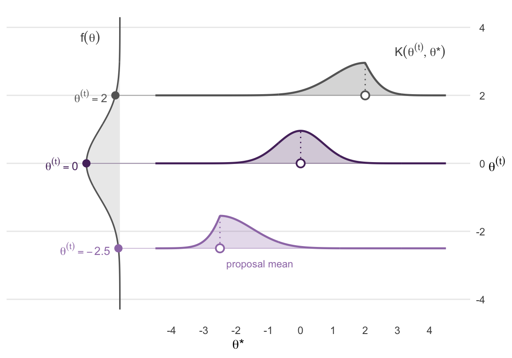
Multiplying by the target density at the current state gives \[ \begin{aligned} f(\theta^{(t)})\,K(\theta^{(t)}\text{, }\theta^\star) &= f(\theta^{(t)})\,q(\theta^\star\mid \theta^{(t)})\,\min\!\left\{1\text{, }\frac{f(\theta^\star)}{f(\theta^{(t)})}\right\}\\ &= q(\theta^\star\mid \theta^{(t)})\,\min\!\left\{f(\theta^{(t)})\text{, }f(\theta^\star)\right\}\\ &= q(\theta^{(t)}\mid \theta^\star)\,\min\!\left\{f(\theta^\star)\text{, } f(\theta^{(t)})\right\}\\ &= f(\theta^\star)\, q(\theta^{(t)}\mid \theta^\star)\,\min\!\left\{1\text{, } \frac{f(\theta^{(t)})}{f(\theta^\star)}\right\}\\ &= f(\theta^\star) \, K(\theta^\star\text{, }\theta^{(t)}). \end{aligned} \] The second line brings \(f(\theta^{(t)})\) inside the minimum. The third line uses the symmetry of the proposal distribution and the fact that reversing the order of the two density values does not change their minimum. The fourth line factors \(f(\theta^\star)\) out of the minimum, leaving the expression for the transition density from \(\theta^\star\) to \(\theta^{(t)}\). Thus, \[ f(\theta^{(t)})\,K(\theta^{(t)}\text{, }\theta^\star) = f(\theta^\star)\,K(\theta^\star\text{, }\theta^{(t)}), \] which is the detailed balance condition as discussed in Section 3.5.
We have shown that the Metropolis acceptance probabilities satisfy the detailed balance condition. Our approach was to specify these probabilities first and then verify that detailed balance holds. We could also reverse this approach, start with the detailed balance condition, and then derive the acceptance probabilities from it. Section C.4 shows how the Metropolis acceptance probabilities can be obtained by solving the detailed balance equation.
5.3.2 Irreducibility and aperiodicity
We have shown that the target distribution is stationary for the Metropolis chain. To establish convergence to this distribution, we must also show that the chain is irreducible and aperiodic.
An irreducible chain can reach any region with positive probability under the target distribution, regardless of its starting state. The Normal proposal distribution can propose values in any such region from any current state, and these proposals have a positive probability of acceptance. The Metropolis chain with a Normal proposal is therefore irreducible. Other proposal distributions may require a different argument.
An aperiodic chain is not restricted to returning to a state at fixed intervals. In our example, the Metropolis chain has a positive probability of rejecting a proposal and remaining at its current state. This possibility of staying in the same state makes the chain aperiodic.
5.4 Targets beyond the Normal
We have established that the Metropolis algorithm satisfies detailed balance and, under the conditions discussed above, converges to the target distribution. We can therefore move beyond posterior distributions known in closed form and use the algorithm for more complicated problems. It is time to take the training wheels off. In this section, we consider two examples with nonconjugate prior distributions.
5.4.1 A robust prior for the sleep example
In our analysis of the average number of hours first-year students sleep we started with a \(\text{N}(7\text{, } 0.5^2)\) prior for the unknown average number of hours \(\mu\). This prior is quite confident. For example, it puts almost no mass below six hours.
Suppose we believe that an average of seven hours of sleep is most plausible, but we are uncertain and want to allow for the possibility that we are badly wrong. A common choice in such cases is the Cauchy prior, \(\mu \sim \text{Cauchy}(7\text{, } 0.5)\), which has the same location as the Normal prior distribution but much heavier tails, assigning more probability to values far from seven hours. Its scale parameter \(0.5\) controls the spread but is not a standard deviation, because the Cauchy distribution has no finite variance. Figure 5.5 compares the \(\text{N}(7\text{, } 0.5^2)\) and the \(\text{Cauchy}(7\text{, } 0.5)\) densities. The Cauchy density is lower at the center and assigns more probability to the tails, where the Normal density is practically zero.
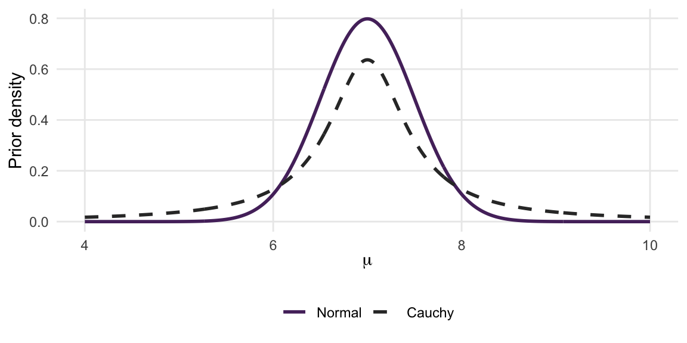
The Cauchy prior is not conjugate to the Normal likelihood, so the Normal posterior formula no longer applies. But we can still evaluate the unnormalized log posterior density by replacing the Normal log prior density with the Cauchy log prior density, using dcauchy() instead of dnorm():
log_posterior_cauchy <- function(mu, y = sleep_hours) {
sum(dnorm(y, mean = mu, sd = 1, log = TRUE)) +
dcauchy(mu, location = 7, scale = 0.5, log = TRUE)
}Notice that dcauchy() uses different argument names than dnorm().
We can now use our metropolis function to sample from the posterior distribution under the Cauchy prior by passing log_posterior_cauchy as the target function. We run the algorithm for \(T = 10,000\) iterations, starting at \(\mu^{(0)} = 6.7\) with a step size of \(c = 0.5\):
set.seed(84735)
fit_cauchy <- metropolis(log_posterior_cauchy, init = 6.7, n_iter = 10000, step_size = 0.5)
fit_cauchy$accept_rate
#> [1] 0.4444The histogram in Figure 5.6 compares the posterior draws under the Cauchy prior with the exact posterior density under the Normal prior. Despite the substantial differences in their tails, the two priors yield similar posterior distributions for these data.
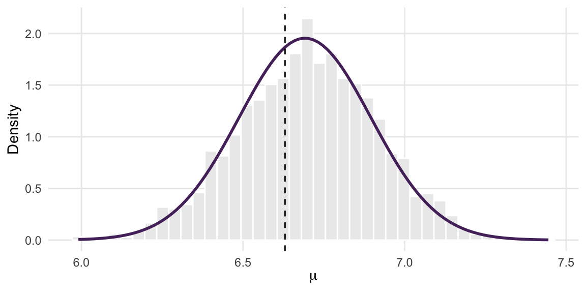
5.4.2 A target with two modes
Hanada & Matsuura (2022, Section 4.4) discuss a target distribution that can be difficult for the Metropolis algorithm: \[ f(\theta) = \frac{1}{2}\times\frac{1}{\sqrt{2\pi}} \exp\left(-\frac{1}{2}(\theta-5)^2\right) + \frac{1}{2}\times\frac{1}{\sqrt{2\pi}} \exp\left(-\frac{1}{2}(\theta+5)^2\right), \] a mixture of two Normal distributions with equal mixing weights, one centered at \(+5\) and the other at \(-5\), each with variance \(1\). Posterior distributions with two or more separated modes can arise in practice, for example through label switching in mixture models or sign indeterminacy in parameter estimation.
In the following R code, we define log_bimodal and use the metropolis function to generate \(T = 10,000\) draws from the target distribution. We compare two step sizes: \(0.5\), as used in the previous examples, and \(5.0\), which is ten times larger. We start both Markov chains at the left mode \(-5\).
set.seed(84735)
log_bimodal <- function(theta) {
log(0.5 * dnorm(theta, -5, 1) + 0.5 * dnorm(theta, 5, 1))
}
fit_small <- metropolis(log_bimodal, init = -5, n_iter = 10000, step_size = 0.5)
fit_large <- metropolis(log_bimodal, init = -5, n_iter = 10000, step_size = 5)Figure 5.7 shows trace plots of both Markov chains and histograms of their sampled states, with the target density overlaid on the histograms.
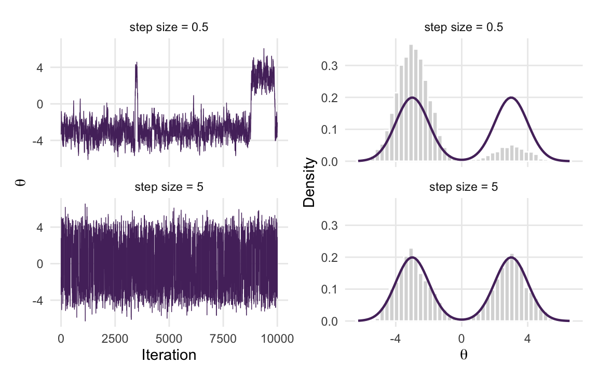
The small-step chain accepted 85% of its proposals, yet it never moved from the left mode to the right mode in \(10,000\) iterations. In contrast, the large-step chain accepted 29% of its proposals and moved between the two modes 393 times. A high acceptance rate therefore does not guarantee good exploration of the target distribution.
To travel from \(-5\) to \(+5\) with a step size of \(0.5\), the chain would likely have to accept a sequence of moves through the region around zero, where the target density is low, or propose a value 10 step sizes away from a state in the left mode. Neither occurred in this run.
But we have just shown that the Metropolis algorithm has the correct stationary distribution. Why, then, does it appear to fail with a step size of \(0.5\) for this target? The problem is not that the algorithm targets the wrong distribution, but that it explores the correct one very slowly. The chain can eventually move between the two modes, but with this step size, such moves may take an extraordinarily long time. A step size that works well for one target distribution may therefore work poorly for another. In the next section, we investigate how the step size of the Normal proposal distribution affects the efficiency of the Metropolis algorithm.
5.5 Step size and efficiency
In Section 4.1, we introduced the autoregressive process of order 1, or AR(1) process: \[ \theta^{(t+1)} = \phi \,\theta^{(t)} + \sqrt{1-\phi^2}\,\epsilon_t\text{, with }\epsilon_t \sim \text{N}(0\text{, }1^2)\text{, and }\phi \in (-1\text{, }1). \] We used this process to study how autocorrelation affects the precision of estimates based on the states of a Markov chain. Assuming that the chain has reached its stationary distribution, we saw that, for the same number of iterations, estimates are more precise when autocorrelation is low than when it is high.
In this AR(1) process, the lag-one autocorrelation is \(\phi\), while the factor \(\sqrt{1-\phi^2}\) controls the size of the innovations \(\epsilon_t\). For positive \(\phi\), which is the case of interest here, we can think of this factor as the step size of the process. A larger step size corresponds to lower autocorrelation, and a smaller step size to higher autocorrelation. The Metropolis algorithm has no explicit autocorrelation parameter, but its Normal proposal distribution \(\text{N}(\theta^{(t)}\text{, } c^2)\) also has a step size \(c\). The same intuition carries over: smaller step sizes generally produce higher autocorrelation, while larger step sizes can reduce it. However, as we shall see, there is a turning point beyond which increasing the step size no longer improves the chain’s efficiency.
To investigate this, we run the metropolis function with the log_posterior function for the mean hours of sleep \(\mu\), using three step sizes: a very small one, a large one, and the value used throughout this chapter. Each chain starts at the posterior mean \(6.69\) and runs for \(T=10,000\) iterations. Figure 5.8 pairs each trace plot with a histogram, allowing us to inspect both the movement of the chain and its approximation to the posterior distribution.
set.seed(84735)
step_sizes <- c(0.02, 0.5, 10)
fits <- map(step_sizes, \(c) metropolis(log_posterior, init = 6.69,
n_iter = 10000, step_size = c))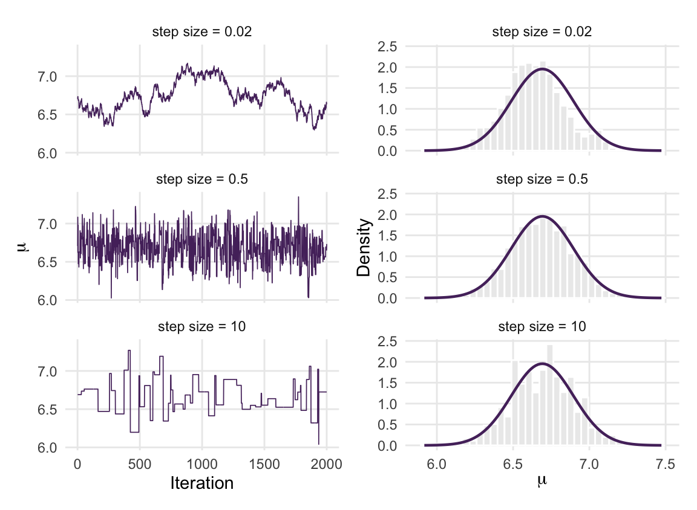
tibble(step_size = step_sizes, accept_rate = map_dbl(fits, "accept_rate"))
#> # A tibble: 3 × 2
#> step_size accept_rate
#> <dbl> <dbl>
#> 1 0.02 0.969
#> 2 0.5 0.439
#> 3 10 0.0253As with the AR(1) process, the step size \(c\) does not change the stationary distribution of the Metropolis chain, but it affects how efficiently the chain explores it. With \(c = 0.02\), almost every proposal is accepted, yet each move is so small that the chain takes hundreds of iterations to cross the posterior; successive draws are nearly identical. With \(c = 10\), most proposals land far outside the main posterior region and are rejected, so the chain repeats the same value for dozens of iterations at a time. With \(c = 0.5\), the proposal standard deviation is about 2.45 times the posterior standard deviation, allowing larger moves while maintaining a moderate acceptance rate. This chain explores the posterior more efficiently than the other two, producing a closer approximation to the posterior distribution.
Figure 5.9 shows the autocorrelation plots for the three Markov chains, confirming our intuition. Comparing the chains, we see that larger step sizes initially reduce autocorrelation by allowing the chain to move farther between iterations. But when the step size becomes too large, frequent rejections cause the chain to remain at the same state, increasing autocorrelation again. This is the turning point we anticipated earlier.
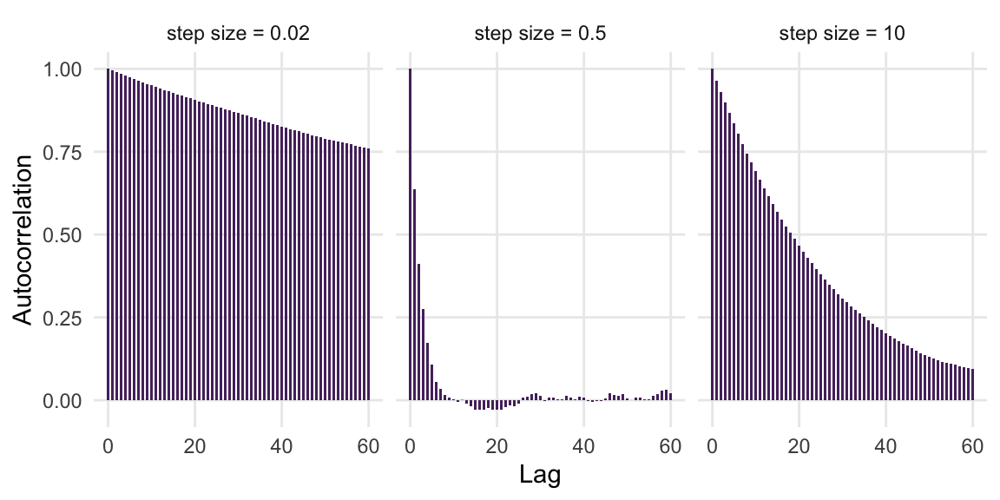
We can assess the precision of the posterior mean estimates by computing the effective sample size (ESS), which expresses how many independent draws would provide the same precision as the correlated draws from the Markov chain. For the three chains, we obtain:
tibble(step_size = step_sizes,
ess = map_dbl(fits, \(f) ess_basic(f$draws$theta)))
#> # A tibble: 3 × 2
#> step_size ess
#> <dbl> <dbl>
#> 1 0.02 24.2
#> 2 0.5 2256.
#> 3 10 186.The middle chain is therefore worth roughly 12 times as many independent draws as the better of the other two, despite using the same number of iterations.
5.5.1 What step size should we use?
Step size affects how efficiently the Markov chain explores the target distribution. The simulations in the previous section suggest that there is an optimal step size. The Metropolis algorithm we have used is called a random-walk Metropolis algorithm because it proposes new values by adding a random step to the current state. Gelman et al. (1996) showed that for a random-walk Metropolis algorithm with a Normal proposal distribution and a Normal target distribution, the optimal step size is about \(2.4\) times the standard deviation of the target, which corresponds to an acceptance rate of approximately \(44\)%. Although this acceptance rate need not be optimal for other target distributions, it is a useful heuristic that often gives close-to-optimal efficiency in practice.
To investigate the relationship between step size, acceptance rate, and effective sample size, we return to our sleep survey and run the Metropolis algorithm with different step sizes. Each chain starts at the posterior mode \(\theta^{(0)} = 6.69\) and runs for \(T = 10,000\) iterations.
set.seed(84735)
tuning <- tibble(step_size = exp(seq(log(0.02), log(10), length.out = 15))) |>
mutate(fit = map(step_size, \(c) metropolis(log_posterior, init = 6.69, n_iter = 10000, step_size = c)),
ess = map_dbl(fit, \(f) ess_basic(f$draws$theta)),
accept_rate = map_dbl(fit, "accept_rate")) |>
select(-fit)Figure 5.10 compares the results across step sizes. The horizontal axis uses a logarithmic scale so that both small and large step sizes remain visible. The gray curve in the left panel shows the theoretical acceptance rate, which can be calculated exactly for this example. The dashed lines mark the acceptance rate of \(0.44\) and the corresponding step size.
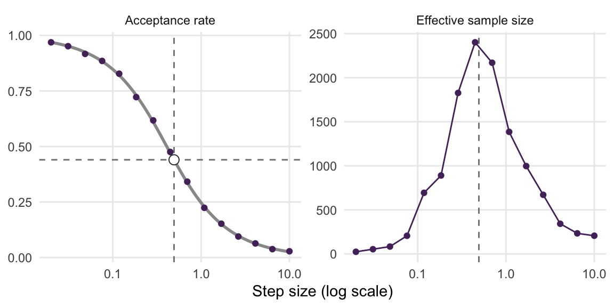
Increasing the step size decreases the acceptance rate. With very small steps, the proposed and current states are similar, so the ratio \(r\) is close to one. Larger steps produce proposals farther from the current state, increasing the probability of proposing values in regions with low target density and reducing the acceptance rate. The simulated acceptance rates closely follow the theoretical curve. An acceptance rate of \(44\)% is achieved at a step size of approximately 0.49, or 2.4 posterior standard deviations.
The corresponding step size also performs well in terms of effective sample size. In the right panel of Figure 5.10, the dashed line passes close to the highest effective sample size among the step sizes investigated. Thus, the theoretical acceptance rate of \(44\)% is close to optimal in our simulation, with a corresponding step size of approximately 0.5. This is the step size we have used throughout the chapter.
5.5.2 What step size to choose?
The results for our sleep survey agree closely with the theoretical predictions. However, the optimal acceptance rate of \(44\)% does not necessarily apply to other target or proposal distributions. Nevertheless, we can use \(44\)% as a starting point for tuning one-dimensional Metropolis algorithms. But even if we aim for an acceptance rate close to \(44\)%, we do not know in advance which step size will produce it. We must find a suitable step size through trial and error.
Choosing a step size
Start with trial runs at a few step sizes. If most proposals are accepted but the chain moves slowly, try a larger step size. If the chain repeatedly stays at the same state, try a smaller one. Compare the effective sample sizes (ESS) and trace plots for runs of equal length. An acceptance rate around 0.4–0.5 is a useful starting guide for one approximately Normal parameter; around 0.25 is a guide for many similarly scaled parameters updated together (see Section 5.6).
After tuning, keep the step size fixed for the run used to estimate posterior summaries. Chapter 6 introduces an adaptive procedure that adjusts the step size during warmup.
Quiz yourself!
A colleague reports that their Metropolis chain accepted 99% of its proposals and concludes that the sampler works beautifully. What do you tell them?
5.6 Metropolis in more than one dimension
Almost every real model has several parameters. In our sleep survey, for example, both the mean \(\mu\) and the standard deviation \(\sigma\) could be unknown, giving us a posterior distribution over the pair \((\mu, \sigma)\). A regression model for hours of sleep with age and caffeine intake as predictors would have even more parameters: an intercept, two regression coefficients, and a residual variance. The Metropolis algorithm extends to such multidimensional target distributions without changing its underlying logic. Instead of proposing a single value, we propose a vector \(\boldsymbol{\theta}^\star\). Here, we generate each component from a Normal distribution centered at the corresponding component of the current state: \[
\theta_d^\star \sim \text{N}(\theta_d^{(t)}\text{, }c^2),
\] where \(\theta_d^\star\) denotes the \(d\)-th entry of \(\boldsymbol{\theta}^\star\). We use a common step size \(c\) for all dimensions and accept or reject the entire proposed vector using the ratio \[
r = \frac{f(\boldsymbol{\theta}^\star)}{f(\boldsymbol{\theta}^{(t)})}.
\] Our metropolis function needs three changes: init becomes a vector, rnorm() generates a proposal for each dimension, and the draws are stored in a matrix. The ... argument continues to forward additional arguments to log_target.
metropolis <- function(log_target, init, n_iter, step_size, ...) {
d <- length(init)
draws <- matrix(NA_real_, nrow = n_iter, ncol = d)
current <- init
current_lp <- log_target(current, ...)
n_accept <- 0
for (t in seq_len(n_iter)) {
proposal <- rnorm(d, mean = current, sd = step_size)
proposal_lp <- log_target(proposal, ...)
if (log(runif(1)) < proposal_lp - current_lp) {
current <- proposal
current_lp <- proposal_lp
n_accept <- n_accept + 1
}
draws[t, ] <- current
}
colnames(draws) <- if (d == 1) "theta" else paste0("theta_", seq_len(d))
list(
draws = as_tibble(draws) |> mutate(iteration = seq_len(n_iter), .before = 1),
accept_rate = n_accept / n_iter
)
}This version of metropolis is a drop-in replacement for the one-dimensional version used earlier. To illustrate how dependence between parameters affects the algorithm, consider a bivariate Normal target distribution with mean vector \(\boldsymbol{0}\), variances of \(1\) in both dimensions, and a correlation of \(0.9\). This strong positive correlation produces the elongated target distribution in Figure 5.11.
Sigma <- matrix(c(1, 0.9, 0.9, 1), 2, 2)
log_bvn <- function(theta) dmvnorm(theta, mean = c(0, 0), sigma = Sigma, log = TRUE)
c(along = exp(log_bvn(c(1, 1)) - log_bvn(c(0, 0))),
across = exp(log_bvn(c(1, -1)) - log_bvn(c(0, 0))))
#> along across
#> 5.907775e-01 4.539993e-05Suppose the chain starts at the mode \((0,0)\). Both proposed vectors, \((1,1)\) and \((1,-1)\), change each coordinate by one standard deviation. But because the target distribution has a strong positive correlation, the two proposals have very different acceptance probabilities. The proposal \((1,1)\) moves in the direction of the correlation and is accepted with probability about \(0.59\), whereas \((1,-1)\) moves against it and is accepted with probability only about \(0.000045\). Yet both proposals are equally likely under our independent Normal proposal distributions.
We now run the updated metropolis function on the bivariate Normal target distribution. The chain starts at \((0,0)\) and runs for \(T=10,000\) iterations with a step size of \(0.5\).
set.seed(84735)
fit_bvn <- metropolis(log_bvn, init = c(0, 0), n_iter = 10000, step_size = 0.5)
fit_bvn$accept_rate
#> [1] 0.5465The acceptance rate of 55% is higher than the \(44\)% guideline for one-dimensional targets and considerably higher than the approximately \(25\)% suggested for multidimensional targets. We introduced the latter guideline in the call-out box of the previous section and will explain it below. Figure 5.11 shows the resulting draws against contours of the bivariate Normal target density. Each contour shows combinations \((\theta_1\text{, }\theta_2)\) with the same target density.
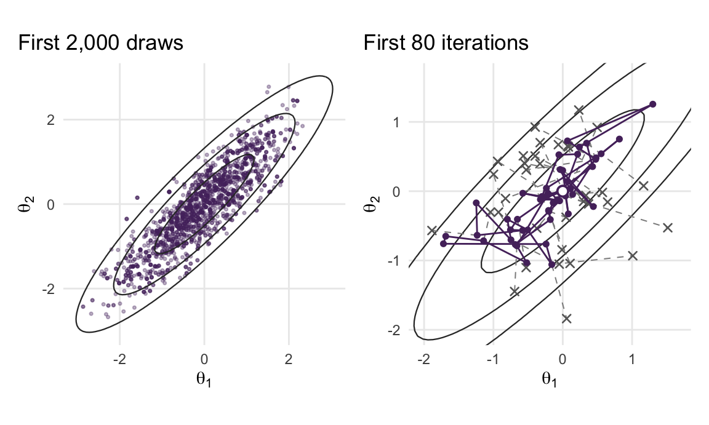
Our Metropolis algorithm appears to work, but it is not very efficient. The problem is that the two parameters are strongly correlated, whereas our proposal distribution treats them independently. In Figure 5.11, we see that the target distribution is stretched along the diagonal, with relatively little probability away from it. We have already seen that a proposal from \((0,0)\) to \((1,1)\) has a reasonable chance of being accepted, whereas a proposal to \((1,-1)\) is almost certainly rejected. Yet our proposal distribution is equally likely to suggest either move. To avoid proposing too many values that will be rejected, we could reduce the step size. But then the accepted moves would also become smaller, and the chain would explore the target more slowly. This problem becomes more difficult as the number of parameters increases.
The preceding example showed how correlation between parameters can make the Metropolis algorithm inefficient. But even when the parameters are independent, proposing many values at once can cause problems. To illustrate this, we fix the step size at \(c=1\) and increase the number of parameters. We use a multivariate Normal target distribution with mean vector \(\boldsymbol{0}\), variances of \(1\), and no correlations between parameters. This allows us to investigate the effect of increasing the number of parameters without the added complication of correlation. Each chain starts with a draw from its target distribution.
set.seed(84735)
log_std_normal <- function(theta) sum(dnorm(theta, log = TRUE))
dims <- c(1, 2, 5, 10, 20, 50)
by_dim <- tibble(d = dims) |>
mutate(fit = map(d, \(k) metropolis(log_std_normal, init = rnorm(k), n_iter = 5000, step_size = 1)),
accept_rate = map_dbl(fit, "accept_rate"),
ess = map_dbl(fit, \(f) ess_basic(pull(f$draws, 2)))) |> # first parameter column
select(-fit)
by_dim
#> # A tibble: 6 × 3
#> d accept_rate ess
#> <dbl> <dbl> <dbl>
#> 1 1 0.704 528.
#> 2 2 0.555 383.
#> 3 5 0.308 356.
#> 4 10 0.138 185.
#> 5 20 0.0396 40.9
#> 6 50 0.0002 1.87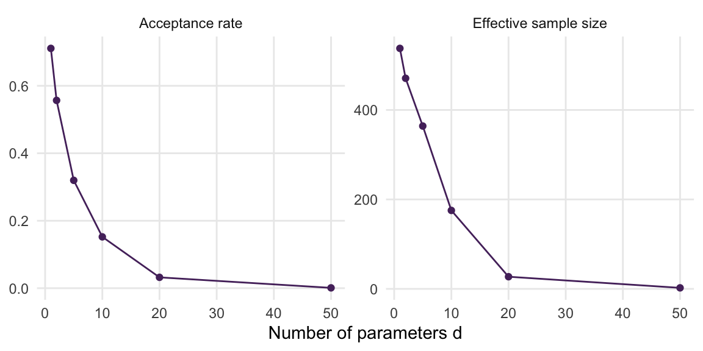
Figure 5.12 shows that increasing the number of parameters reduces both the acceptance rate and the effective sample size, even though the target parameters are independent. The reason lies in the acceptance rule we introduced earlier: the entire proposed vector is accepted or rejected at once. As more parameters change together, their combined effect can produce a low target density, even when the proposed change in each parameter is modest.
We have seen that step size is crucial for efficient sampling. In higher dimensions, it becomes even more important to choose it carefully. For targets with independent standard Normal coordinates, optimal-scaling theory shows that as the dimension \(d\) tends to infinity, the optimal step size approaches \(c\approx2.38/\sqrt d\), with an acceptance rate approaching \(0.234\) (Roberts et al., 1997). Thus, the step size should decrease as the number of parameters increases. However, smaller steps also mean that the chain moves less in each dimension, making efficient exploration increasingly difficult. The appropriate step size also depends on the scale and dependence of the target parameters, so this is not a universal rule. More advanced algorithms address these difficulties by tuning the step size automatically (Chapter 6), shaping proposals to the target (Chapter 7), updating parameters separately (Chapter 8 (Gibbs Sampling and Metropolis-within-Gibbs)), or using gradients to guide their movement (Chapter 11 (Hamiltonian Monte Carlo)).
5.7 Chapter summary
In this chapter, you built the Metropolis algorithm from scratch and learned why it works, when it works well, and when it does not.
- The Metropolis algorithm generates a Markov chain with the target distribution as its stationary distribution. In each iteration, it proposes a new value from a Normal distribution centered at the current state and compares their target densities through the ratio \(r\). Proposals with \(r \geq 1\) are always accepted; otherwise, they are accepted with probability \(r\). When a proposal is rejected, the chain remains at its current state, which is recorded again.
- The normalizing constant cancels in the ratio \(r\), so the algorithm only requires the unnormalized posterior density \(f(y \mid \theta) f(\theta)\). Working with log densities makes the computation numerically more stable.
- With a symmetric proposal, the Metropolis acceptance rule satisfies detailed balance, making the target distribution stationary. We also argued that the chains considered in this chapter are irreducible and aperiodic, which ensures convergence to the target distribution. Thus, for the Normal random-walk proposals used here, every fixed positive step size gives the same stationary distribution, although reaching it may take a very long time.
- The efficiency of the chain depends on the step size \(c\) and the shape of the target distribution. Small steps produce slow movement, whereas excessively large steps lead to frequent rejections. Both can result in highly autocorrelated draws. We can tune the step size by examining trace plots, effective sample size (ESS), and acceptance rates. Rates around 0.4–0.5 for one approximately Normal parameter and around 0.25 for many similarly scaled parameters updated together are useful starting points.
- The Metropolis algorithm also extends to multidimensional target distributions, but proposing independent Normal changes to all parameters at once can become inefficient as the number of parameters grows or when they are strongly correlated. Chapter 6, Chapter 7, Chapter 8 (Gibbs Sampling and Metropolis-within-Gibbs), and Chapter 11 (Hamiltonian Monte Carlo) introduce methods for improving exploration.
5.8 Quiz answers
Quiz 1. For the proposal \(2.5\), the acceptance probability is \(\min(1,0.02/0.24)\approx0.083\). For the proposal \(0.3\), the ratio is \(0.38/0.24>1\), so the proposal is always accepted. These probabilities describe the acceptance of an already generated proposal, not the probability of proposing that exact value from a continuous distribution.
Quiz 2. A high acceptance rate alone does not guarantee good exploration. For this Normal random-walk sampler, an acceptance rate of 99% suggests that the step size may be too small, causing the chain to move slowly. Inspect the trace plot and effective sample size (ESS), and compare the results with a trial run using a larger step size. The goal is to obtain precise estimates through efficient exploration, not to achieve a particular acceptance rate.
5.9 Exercises
5.9.1 Conceptual exercises
Exercise 5.1 (Accept or reject?) A Metropolis chain with a symmetric proposal is at \(\theta^{(t)} = 2\). For each proposed value below, the unnormalized target is given at the current state and at the proposal. State the probability that the proposal is accepted.
- \(f(2) = 0.6\), \(f(\theta^\star) = 0.9\)
- \(f(2) = 0.6\), \(f(\theta^\star) = 0.15\)
- \(f(2) = 0.6\), \(f(\theta^\star) = 0.6\)
- \(f(2) = 0.6\), \(f(\theta^\star) = 0\)
Exercise 5.2 (The missing constant) Explain, in words and in one line of algebra, why the Metropolis algorithm never needs the normalizing constant \(f(y)\) of the posterior. Then name one quantity from Chapter 2 for which the normalizing constant is needed, and explain why Metropolis draws do not directly give it to you.
Exercise 5.3 (Detailed balance with a twist) For a standard Normal target and a symmetric Normal random-walk proposal with positive step size, suppose someone uses a modified acceptance rule: always accept if \(r \geq 1\), and accept with probability \(r^2\) if \(r < 1\). Does this chain satisfy detailed balance with respect to \(f\)? If not, describe in words how its stationary distribution differs from \(f\).
Exercise 5.4 (Reading a trace plot) Three long Metropolis runs use the same one-dimensional Normal target and symmetric Normal random-walk proposals with step sizes 0.01, 1, and 100. Their acceptance rates are 0.02, 0.98, and 0.45, but the labels are lost. Give the most plausible matching, explain the expected trace behavior, and state what further information you would inspect before choosing a step size.
5.9.2 Practical exercises
Exercise 5.5 (Gamma-Poisson by Metropolis) As shown in Chapter 2 and Section D.3, a Poisson rate \(\lambda\) with a \(\text{Gamma}(s, r)\) prior has a \(\text{Gamma}(s + \sum y_i, r + n)\) posterior. Take \(s = 3\), \(r = 1\), and the data \(y = (2, 0, 4, 1, 3, 2)\).
- Write
log_posterior(lambda)for this model. What should it return for negativelambda? - Run
metropolis()for 10,000 iterations frominit = 1with step size 0.5. Report the acceptance rate and compare the histogram of the draws with the exact Gamma posterior. - Repeat with step sizes 0.05 and 50. Compare acceptance rates and trace plots for all three step sizes. Discard the first 500 draws of each run before computing their effective sample sizes. Explain why both very small and very large steps can be inefficient.
Exercise 5.6 (Warm-up) Run the sleep sampler with step size 0.5 from the starting values \(\mu^{(0)} = 0\), \(\mu^{(0)} = 6.7\), and \(\mu^{(0)} = 20\), for 2,000 iterations each.
- Plot the three traces on the same axes. How many iterations does each chain need to reach the posterior region?
- For each chain, compute the posterior mean from all 2,000 draws and from the draws after discarding the first 200. Which estimate is affected more by the starting value, and why?
Exercise 5.7 (Two chains catch a mode) Return to the bimodal target log_bimodal() with step size 0.5.
- Run two chains of 5,000 iterations, one from \(-5\) and one from \(5\). Compute the posterior mean of \(\theta\) from each chain separately and from the two chains pooled.
- Compute \(\widehat{R}\) for \(\theta\) using
posterior::rhat()on a matrix with one column per chain. What does the value tell you? - Compare step sizes 0.5, 1, 2, and 5 using the two chains at each value. Report \(\widehat{R}\), acceptance rates, and the fraction of states above zero in each chain. Which settings give more convincing exploration, and why does \(\widehat{R}<1.01\) alone not settle the question?
Exercise 5.8 (Two parameters) Extend the sleep example by treating \(\sigma\) as unknown, with prior \(\sigma \sim \text{Exponential}(1)\), so that the parameter vector is \((\mu, \sigma)\).
- Write
log_posterior(theta)wheretheta = c(mu, sigma). - Run the vector version of
metropolis()frominit = c(7, 1)for 20,000 iterations. Try step sizes 0.1, 0.3, and 1. Compare traces and the ESS of both parameters after discarding the first 500 iterations, and explain your choice of step size. - Plot the joint draws of \((\mu, \sigma)\) and report a 95% credible interval for \(\sigma\). How does the interval for \(\mu\) compare with the one where \(\sigma\) was fixed at 1?
5.9.3 Applied exercises
Exercise 5.9 (Ghosts and age) The pulse_of_the_nation data in the bayesrules package record, among other things, whether each of 1,000 respondents believes in ghosts and their age. Consider the logistic regression \[
Y_i \mid \beta_0, \beta_1 \sim \text{Bernoulli}(\pi_i), \qquad \log\frac{\pi_i}{1 - \pi_i} = \beta_0 + \beta_1 \, \text{age}_i,
\] with \(Y_i = 1\) for a believer, and independent \(\text{N}(0, 1)\) priors on \(\beta_0\) and \(\beta_1\) after centering and scaling age.
- Write
log_posterior(theta)fortheta = c(beta_0, beta_1). Usedbinom(y, 1, plogis(eta), log = TRUE)for the log likelihood and check that it returns a finite number attheta = c(0, 0). - Run the vector version of
metropolis()for 20,000 iterations fromc(0, 0). Compare a few step sizes, using acceptance between 0.2 and 0.4 as an initial guide. Choose using traces and the ESS of both coefficients after discarding the first 500 iterations, and report your comparison. - Plot the joint draws of \((\beta_0, \beta_1)\). Are the two coefficients correlated in the posterior? Would they be if age were not centered?
- Report a 95% posterior credible interval for \(\beta_1\) and the posterior probability that older respondents are less likely to believe in ghosts.
- Fit the same model with
rstan(see Chapter 4 for the workflow) and compare the posterior means and intervals.